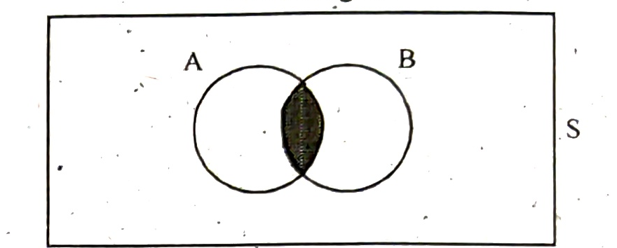
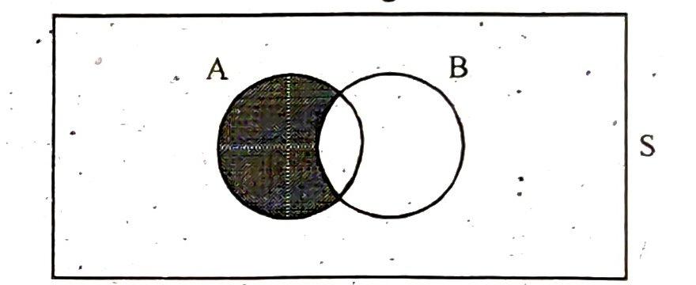
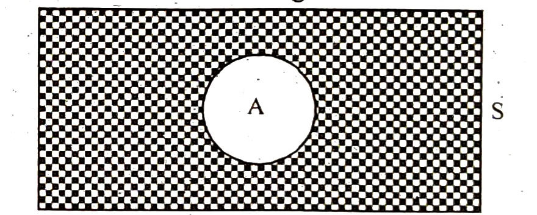
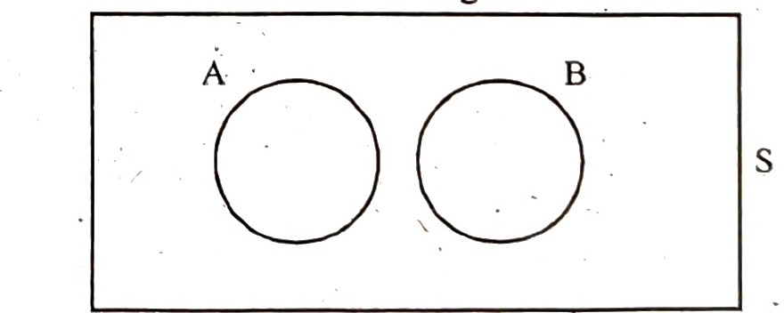

{kind=link}
Chapter 8 Set Theory · printed page 3 (scan 3) — §8.12 end (intersection), §8.13 Difference of Two Sets, §8.14 Complement Set, §8.15 Disjoint or Mutually Exclusive Sets, §8.16 Class of Sets, §8.17 Power Set; Figures 3–6

Figure-3
Let $A = \{1, 3, 4, 5\}$ and $B = \{2, 3, 4, 6\}$, then the intersection of A and B is $A \cap B = \{3, 4\}$

Figure-4
8.13. DIFFERENCE OF TWO SETS
If A and B are two sets, then A – B is a set which contains those elements of A which are not in B that is $A - B = \{x / x \in A \text{ and } x \notin B\}$
Let $A = \{1, 2, 3, 4\}$ and $B = \{3, 4, 5, 6\}$, then $A - B = \{1, 2\}$

Figure-5
8.14. COMPLEMENT SET
If A is a set and S is a universal set, then $\bar{A}$ is a set which contains those elements of S which are not in A that is
Let $S = \{1, 2, 3, 4, 5, 6, 7, 8, 9, 10\}$ and $A = \{1, 2, 3\}$, then $\bar{A} = \{4, 5, 6, 7, 8, 9, 10\}$

Figure-6
8.15. DISJOINT OR MUTUALLY EXCLUSIVE SETS
Two sets A and B are said to be disjoint or mutually exclusive if they have no elements in common, that is $A \cap B = \phi$.
Let $A = \{1, 2, 3, 4\}$ and $B = \{7, 8, 9, 10\}$, then $A \cap B = \phi$.
8.16. CLASS OF SETS
If the elements of a set E are also sets, then the set E is called a class of sets or a set of sets is called a class of sets.
Let $A = \{1, 2\}$, $B = \{2, 3, 4, 5\}$, $C = \{1, 9\}$ and $D = \{6, 7, 8, 10\}$ and $E = \{A, B, C, D\}$, then E is called class of sets.
8.17. POWER SET
The set of all possible subsets of a set 'A' is called power set of A and is denoted by P(A).
Let $A = \{1, 2, 3\}$
There are $2^3 = 8$ subsets from a set of 3 elements, that is
$A_1 = \{1\}$, $A_2 = \{2\}$, $A_3 = \{3\}$, $A_4 = \{1, 2\}$, $A_5 = \{1, 3\}$, $A_6 = \{2, 3\}$, $A_7 = \{1, 2, 3\}$, $A_8 = \{\}$
Then $P(A) = \{A_1, A_2, A_3, A_4, A_5, A_6, A_7, A_8\}$